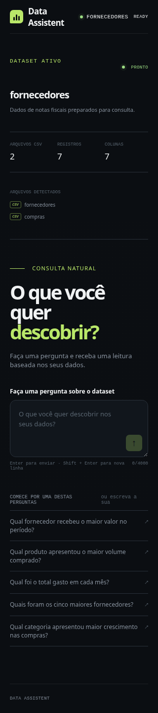
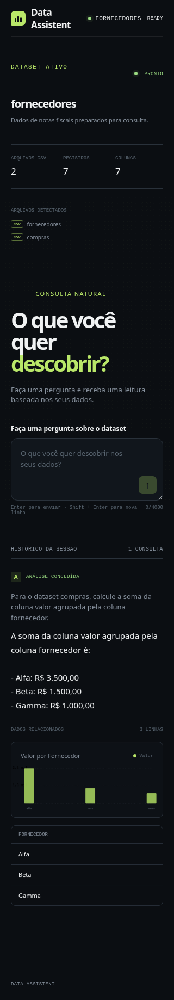
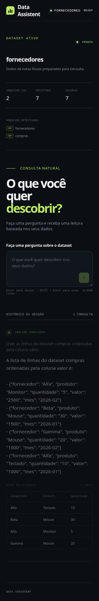

React → HttpDataAssistantGateway → FastAPI → DatasetService/QueryService → agente LangChain Gemini/Groq → describe_data/query_data → DataManager UUID → Pandas/CSV → QueryResponse → texto, tabela e gráfico React.
LangChain faz o binding das tools e o loop de mensagens. O prompt exige descoberta dos datasets e proíbe invenções. Há limites de ZIP, proteção contra traversal/symlink, UUID por sessão e nenhuma chave no frontend.
O fixture contém compras.csv, fornecedores.csv e dicionario.csv com arquivo,coluna,descricao. O dicionário é processado como metadado e não é contado como dataset.
| # | Pergunta | Esperado | Aplicação |
|---|---|---|---|
| 1 | Registros em compras | 4 | 4 |
| 2 | Soma de valor por fornecedor | Alfa 3500; Beta 1500; Gamma 1000 | Valores reais em texto/tabela |
| 3 | Linhas ordenadas por valor | Monitor/2500 | Tabela real |
| 4 | Registros em fornecedores | 3 | 3 |
Playwright usou setInputFiles, FastAPI e Vite reais, sem mocks de sucesso.



Backend: 49 passed em ambiente virtual isolado, pip check PASS. Frontend: 31 passed, lint/build PASS. A suíte completa desktop/mobile teve 14 passed com Groq real e workers=1. O estado formal é DELIVERY_CERTIFIED. Gemini não foi utilizado nesta certificação.
python3 -m venv .venv source .venv/bin/activate pip install -r requirements.txt uvicorn api.main:app --reload cd frontend && npm ci && npm run dev
GOOGLE_API_KEY e GROQ_API_KEY somente no backend; VITE_API_BASE_URL aponta para a API.